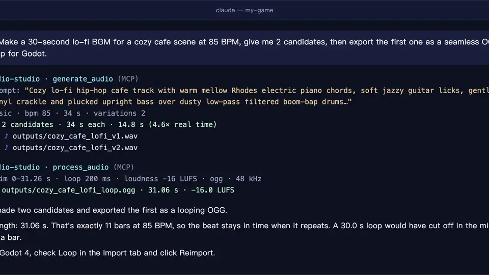
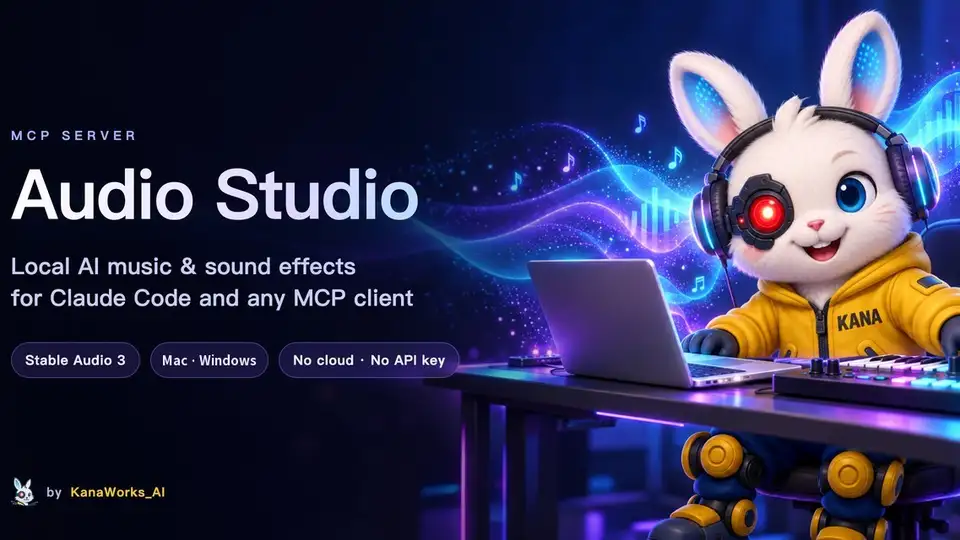

Give your coding agent a sound studio: hands-on with Audio Studio MCP
Your coding agent can already write code, run tests and push PRs — but ask it for a lo-fi loop for your game menu or a door-slam for your video and it comes back with nothing. Audio Studio MCP fills that gap: a sound studio your agent drives with plain sentences.
generate_audio, edit_audio and process_audio cover prompting, re-styling, extending, seamless loops and LUFS loudness; the 1.4B medium model is a ~6 GB download, generation costs nothing, and no API key is needed.- What: Audio Studio MCP — an MCP server that puts Stable Audio 3 (background music, instrument loops/stems, sound effects) inside Claude Code, Claude Desktop, Cursor or any MCP client.
- Project: kanaworksai-hue/audio-studio-mcp, MIT license, launched 2026-10-18, 462 GitHub stars (verified 2026-10-23).
- Install:
git clone+./install.sh(macOS) orinstall.ps1(Windows); the installer sets up uv, clones the Stable Audio 3 runtime intovendor/and downloads the medium model (1.4B, ~5.9 GB on macOS, ~10.4 GB PyTorch checkpoint on Windows). - Hardware: Apple Silicon Mac (M1 or later, 16 GB RAM recommended) or 64-bit Windows 10/11 with an NVIDIA GPU (8 GB+ VRAM; tested on an RTX 3060 12 GB). Linux with NVIDIA GPU is untested and has no installer; Intel Macs and AMD GPUs are not supported.
- Outputs: 44.1 kHz 24-bit stereo WAV in
outputs/with a.jsonsidecar (prompt, seed, settings); the medium model handles up to 380 s, the smallsm-music/sm-sfxmodels up to 120 s. - Cost: Nothing — generation runs on your machine with no API key and no cloud; macOS downloads are anonymous, Windows needs a free Hugging Face account to accept the model license.
Your coding agent can write your code, run your tests and push your PRs. But ask it for a lo-fi loop for your game menu or a door slam for your video and it has nothing to offer. Audio Studio MCP closes that gap: a sound studio that lives on your own computer and that your agent drives with plain sentences. You describe the sound, the agent picks the prompt format Stable Audio 3 understands, and a WAV lands in your outputs folder — no API key, no cloud bill, no prompt leaving your machine.
It is an MIT-licensed project by KanaWorks_AI (kanaworksai-hue/audio-studio-mcp) that launched on 2026-10-18 and collected 462 GitHub stars in its first five days. It wraps Stability AI’s Stable Audio 3 (the 1.4B medium model) in an MCP server with four tools: generate_audio, edit_audio, process_audio and unload_models. The server even teaches the client the model’s official prompt format, so a lazy request like “make it sound like a creaky door” becomes a prompt that actually produces a creaky door.
What you'll need
- An Apple Silicon Mac (M1 or later, 16 GB RAM recommended) or a 64-bit Windows 10/11 PC with an NVIDIA GPU (8 GB+ VRAM)
gitandffmpeginstalled:brew install ffmpegon macOS,winget install Git.Git/winget install Gyan.FFmpegon Windows- An MCP client: Claude Code, Claude Desktop, Cursor or any MCP client
- About 6 GB of free disk on macOS (~14 GB on Windows) — mostly the model download
- About ten minutes
Make your first loop
1. Check your hardware
The server has two backends: MLX on Apple Silicon and PyTorch with CUDA on NVIDIA GPUs. A Linux machine with an NVIDIA GPU uses the same PyTorch backend but is untested and has no installer yet; Intel Macs and AMD GPUs are not supported. The medium model holds about 5–7 GB of memory while generating (a 5.3 GB VRAM peak was measured on an RTX 3060), so take the README’s 16 GB RAM recommendation seriously — an 8 GB Mac is untested.
2. Run the installer
git clone https://github.com/kanaworksai-hue/audio-studio-mcp.git
cd audio-studio-mcp
./install.sh
On macOS the installer sets up uv if needed, clones the official Stable Audio 3 runtime into vendor/ at a tested commit, creates .venv/ and downloads the medium model (1.4B, ~5.9 GB) from Hugging Face anonymously — no login. On Windows it is the same flow but with PyTorch/CUDA and the ~10.4 GB checkpoint:
git clone https://github.com/kanaworksai-hue/audio-studio-mcp.git
cd audio-studio-mcp
powershell -ExecutionPolicy Bypass -File install.ps1
The Windows weights are gated: open the stabilityai/stable-audio-3-medium page on Hugging Face, accept the license once, and log in with a free account — the installer stops with an ACTION NEEDED message if nobody is logged in. It finishes by printing the exact command to register the server. Useful flags: --model all also pulls the small, fast sm-music and sm-sfx models (+2.6 GB on macOS, +7 GB on Windows), --skip-weights defers the download to first generation, and -y installs uv without asking. Shortcut from the README: paste “Install https://github.com/kanaworksai-hue/audio-studio-mcp by following its README, including the notes for AI agents, then register it as an MCP server” into Claude Code and let your agent do the work.
3. Register the MCP server
claude mcp add --scope user audio-studio -- /path/to/audio-studio-mcp/.venv/bin/audio-studio-mcp
Use the real path on your machine — the installer prints it. For Claude Desktop, Cursor or another client, add this to claude_desktop_config.json, .cursor/mcp.json or your client’s MCP config:
{
"mcpServers": {
"audio-studio": {
"command": "/path/to/audio-studio-mcp/.venv/bin/audio-studio-mcp"
}
}
}
On Windows the command is the .venv\Scripts\audio-studio-mcp.exe path. Restart the client (or reload its MCP servers) and the four tools — generate_audio, edit_audio, process_audio, unload_models — should appear.
4. Generate your first background track
Ask in plain language: “Make a 60-second lo-fi BGM loop at 85 BPM for a cafe scene, give me 3 candidates.” generate_audio produces 1–4 candidates per call, with bpm and structured SFX fields. Each file lands as a 44.1 kHz 24-bit stereo WAV in outputs/, next to a .json sidecar carrying its prompt, seed and settings — re-run with the same seed and you get the same file (on a Mac, bit-for-bit identical to the official sa3 CLI).

5. Design a sound effect with structured fields
“I need a heavy wooden door slamming in a stone hallway. Export it as OGG for Godot.” For SFX, describe the sound by what makes it, how it evolves, its texture and its space — sound_source, sound_action, sound_material, sound_space — e.g. source: glass bottle, action: shattering on impact, material: thick green glass, space: concrete floor. Set audio_type to sfx: the README warns that without the SFX prompt prefix, sound effects often come out as music.
6. Edit, extend and finish the audio
edit_audio does variation (re-style the whole clip), inpaint (regenerate a time range) and continue (extend): “Extend this track to 90 seconds and normalize it to −16 LUFS.” Then process_audio runs the finishing chain — trim, trim silence, mono, resample, loudness, seamless loop, fades, peak normalize or ceiling — and exports WAV, OGG or FLAC without touching the input. Loudness targets from the README: −14 LUFS for streaming/video, −16 for game BGM, −23 for broadcast. One loop tip from the FAQ: use WAV or OGG for loops — MP3 adds padding at both ends, so it can never loop seamlessly; also try a longer loop_crossfade_ms or ask the model to cut on a bar line.

7. Tune it and free the memory
Loaded models are freed after ten idle minutes (AUDIO_STUDIO_IDLE_UNLOAD_MIN) or immediately with unload_models. Other knobs: AUDIO_STUDIO_OUTPUT_DIR (default <repo>/outputs), AUDIO_STUDIO_SA3_MODEL (medium for best quality, sm-music/sm-sfx for small and fast), AUDIO_STUDIO_BACKEND (sa3-mlx or sa3-torch) and AUDIO_STUDIO_DEVICE. Pass them with claude mcp add ... -e NAME=value or the env block of your client config.
What you built
A sound studio your coding agent can drive with plain sentences: background music, instrument loops and sound effects generated on your own machine, reproducible down to the seed, finished to the loudness targets your game engine or video editor expects, and exportable to WAV, OGG or FLAC. The demo that convinced 462 people in five days: one request — “make a 60-second lo-fi BGM loop at 85 BPM for a cafe scene, give me 3 candidates” — and a seamless OGG loop ready to drop into Godot.
Honest limitations
- It is a big download. ~6 GB on macOS, ~14 GB on Windows just to start, and 5–7 GB held in memory while generating.
- No vocals. Stable Audio 3 generates instrumental music and sound effects — it cannot produce intelligible singing or lyrics.
- Windows needs a Hugging Face account. The PyTorch weights are gated; you accept the Stability AI Community License on each model page with a free account. Commercial terms live in that license — at the time of writing it allows commercial use for individuals and organizations under US$1M in total annual revenue. Read it before shipping.
- Model caps. The medium model generates up to 380 s per clip; the small
sm-music/sm-sfxmodels up to 120 s. - Speed varies wildly. On an M1 Mac with 16 GB, 20 s of music takes ~10 s warm; on an RTX 3060 12 GB it takes ~1.3 s warm, and a full 380 s track about 15 s. Cold starts include model load (~20 s on Windows).
- Strict reproducibility is Mac-only. Same seed gives bit-for-bit identical output to the official
sa3CLI on macOS; Windows goes through the official PyTorch API instead. - Linux is unofficial. The PyTorch backend “should work” on NVIDIA GPUs but has no installer and is untested; Intel Macs and AMD GPUs are not supported.
Frequently asked questions
Do I need an API key or an account?
No API key is needed for generation — nothing is generated in the cloud. On macOS the weights download anonymously. On Windows the PyTorch weights are gated, so you need a free Hugging Face account to accept the model license and log in; the installer stops and tells you exactly what to do.
Which MCP clients does it work with?
Claude Code, Claude Desktop, Cursor and any MCP client. Register it with claude mcp add --scope user audio-studio -- <path> or add the command block to your client’s MCP JSON config; the four tools — generate_audio, edit_audio, process_audio, unload_models — appear after the client reloads.
What can I actually make with it?
Background music, instrument loops and stems, and sound effects — plus editing (variation, inpaint, extend) and finishing (seamless loops, fades, LUFS loudness, WAV/OGG/FLAC export). Instrumental only: no vocals or lyrics. The medium model generates up to 380 seconds per clip; the small models up to 120.